William Gregory M. Rivero, MD, FPCP, DPSN · Internal Medicine · Nephrology · Clinical Nutrition
Platformwilliamriveromd.com
Image GenerationGPT-4o · 2D + 3D + Hybrid
StandardKDIGO 2024 · Brenner & Rector · Netter
10
Anatomy
14
Conditions
18
Procedures
8
Embryology
Gross AnatomyStructural Reference
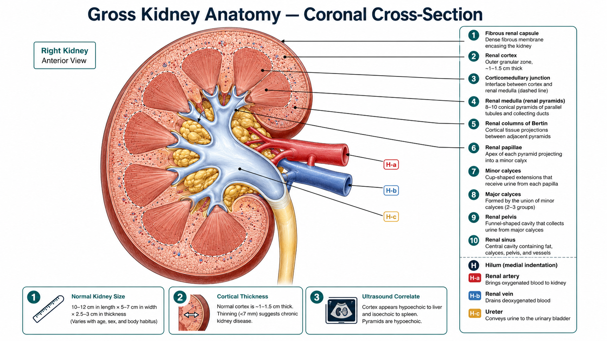
⊕
01Gross Kidney Anatomy — Coronal Cross-Section
Coronal cross-section showing renal capsule, cortex, medullary pyramids, renal columns of Bertin, calyces, pelvis, and hilum. Corticomedullary junction demarcated. Color-coded zones with leader-line labels. Clinical pearl strip: size range, cortical thickness, ultrasound correlate.
Cortex/MedullaHilum AnatomyUS Correlate
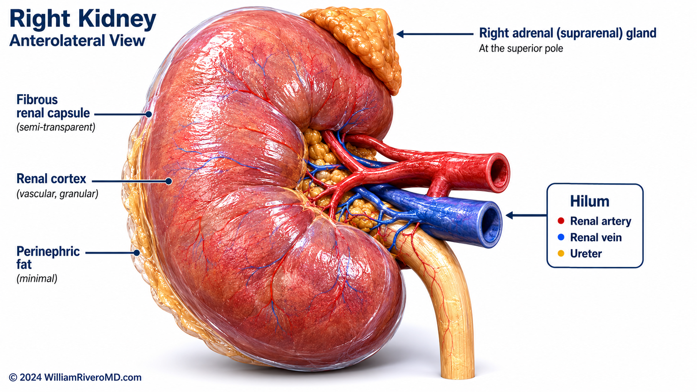
⊕
02Gross Kidney Anatomy — External 3D Render
Anterolateral 3D volumetric render. Semi-transparent fibrous capsule reveals cortical vascular blush. Hilum clearly shows renal artery, vein, and ureter. Right adrenal gland at superior pole. Subsurface scattering gives realistic parenchymal depth. Netter/Gray's 3D upgrade aesthetic.
3D RenderHilar AnatomyAdrenal Relation
Vascular SupplyArterial · Venous · Microvascular
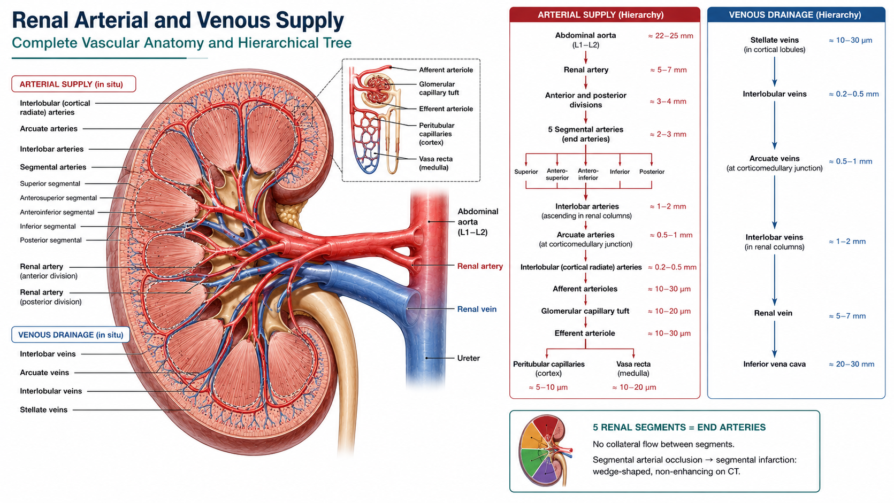
⊕
03Renal Arterial Tree — Hierarchical 2D Schematic
Complete arterial hierarchy from aorta to afferent arterioles overlaid on kidney cross-section, with paired venous drainage. Five segmental arteries annotated as end-arteries. Afferent-efferent arteriole relationship with RAAS physiology callouts. Clinical table: each vessel level with disease correlate and diuretic/RAAS implications.
End-ArteriesRAAS PhysiologyRAS / ACEi Risk
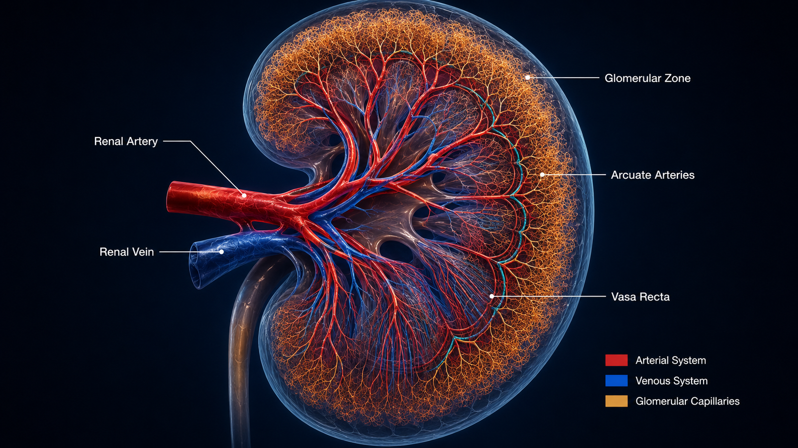
⊕
04Renal Vascular Corrosion Cast — 3D
Vascular corrosion cast aesthetic: arterial tree in deep crimson, venous in deep blue, glomerular zone in amber-gold, vasa recta as fine medullary striations. Transparent kidney silhouette preserves anatomical context. Arcuate arteries at corticomedullary junction highlighted in teal. Dark navy background with bioluminescent self-illumination.
Corrosion CastArcuate ArteriesGlomerular Zone
Nephron AnatomyFunctional · Transport · Pharmacology
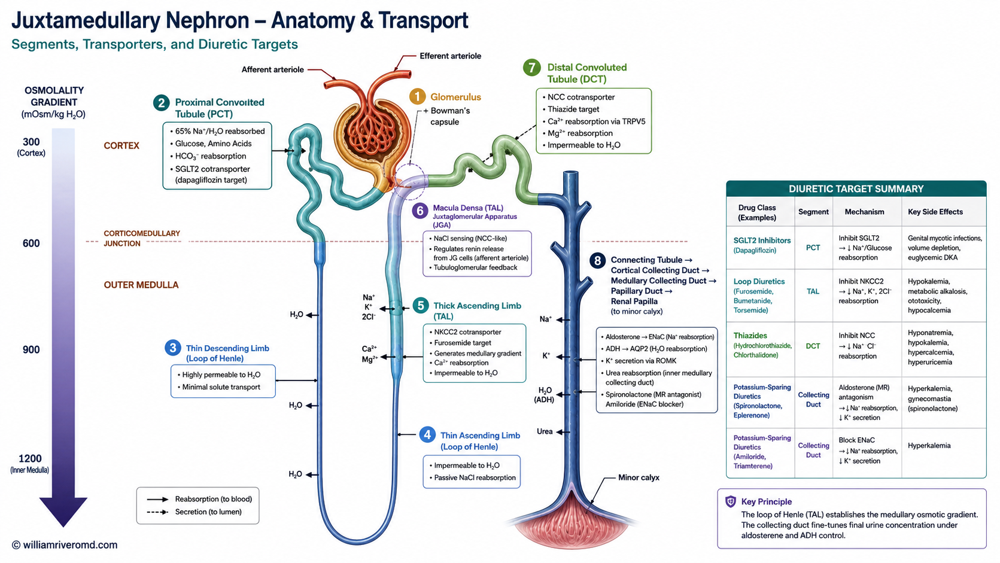
⊕
05Complete Nephron — Functional Diagram with Transporters
Full juxtamedullary nephron U-loop with segment-specific transporter callouts: SGLT2 (PCT), NKCC2 (TAL), NCC (DCT), ENaC/ROMK (CD). Osmolality gradient scale 300→1200 mOsm/kg. Diuretic target summary panel. Afferent-efferent arterioles with Starling force arrows. Corticomedullary boundary dashed line.
SGLT2i TargetLoop DiureticsThiazidesAldosterone
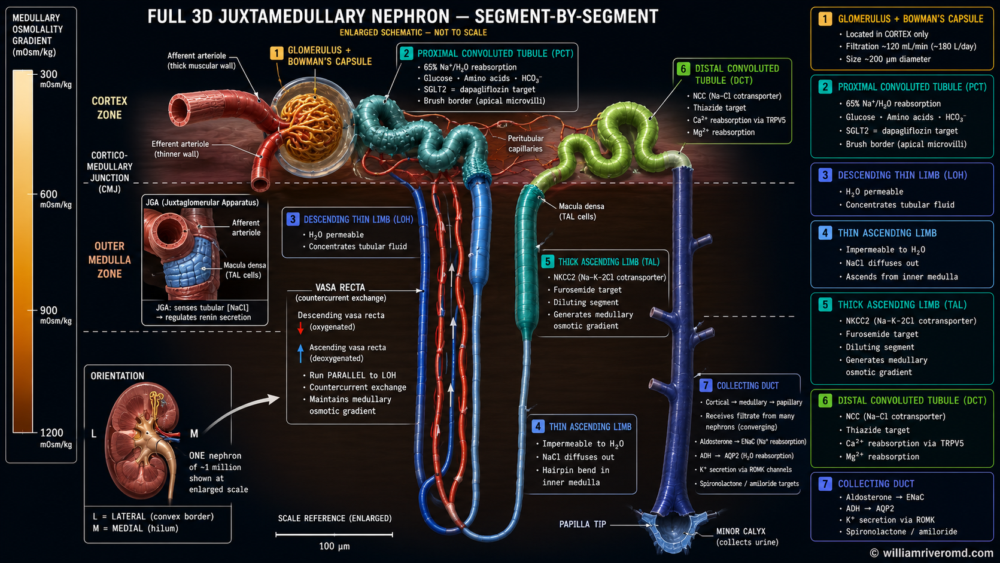
⊕
06Juxtamedullary Nephron — 3D in Renal Context
3D juxtamedullary nephron rendered within a transparent kidney coronal section. Color-coded segments: glomerulus amber, PCT teal, loop of Henle blue gradient, DCT green, collecting duct navy. Afferent and efferent arterioles and vasa recta in red/blue vascular tubes. Cortex/medulla boundary as horizontal plane.
Three-layer filtration barrier from blood to Bowman's space: fenestrated endothelium (70–100 nm pores, glycocalyx charge barrier), trilaminar GBM (lamina rara interna/densa/externa), podocyte foot processes with slit diaphragm (nephrin/podocin). Normal ACR <30 mg/g. Nephrotic vs nephritic failure patterns annotated.
PodocyteGBM LayersNephrotic Syndrome
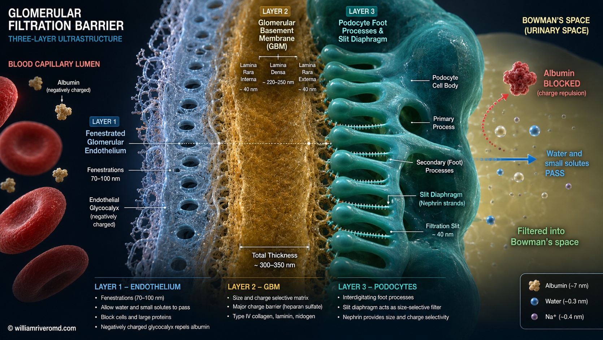
⊕
08Podocyte & Slit Diaphragm — EM-Style 3D Render
Electron microscopy-inspired 3D ultrastructure. Podocyte cell body (teal) with interdigitating foot processes. Slit diaphragm as zipper-like nephrin bridge (~40 nm). GBM as translucent amber sheet. Fenestrated endothelium in pale blue below. Dark navy background. Labeled albumin-blocked and water/solute-passing arrows.
09Retroperitoneal Relations — Bilateral 3D Spatial Render
Bilateral kidneys in retroperitoneal context with peritoneum removed. Adjacent structures: adrenal glands, ureters, liver (right), spleen and pancreatic tail (left), psoas muscles, aorta, IVC. Gerota's fascia as translucent envelope. Right kidney lower than left. Left renal vein crossing aorta anteriorly labeled. CT reconstruction aesthetic.
Gerota's FasciaPsoas RelationsAdrenal Position
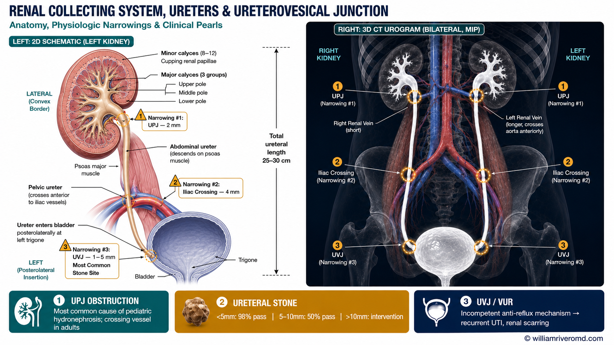
⊕
10Collecting System, Ureters & UVJ — Hybrid Panel
Left panel: 2D schematic of LEFT kidney collecting system with three physiologic narrowings (UPJ, iliac crossing, UVJ) marked with numbered amber caution markers. Right panel: 3D CT urogram–style bilateral MIP reconstruction. Bottom strip: UPJ obstruction, ureteral stone passage rates, VUR/reflux nephropathy pearls.
UPJ ObstructionStone NarrowingsUVJ / VUR
Structural & Congenital5 Illustrations
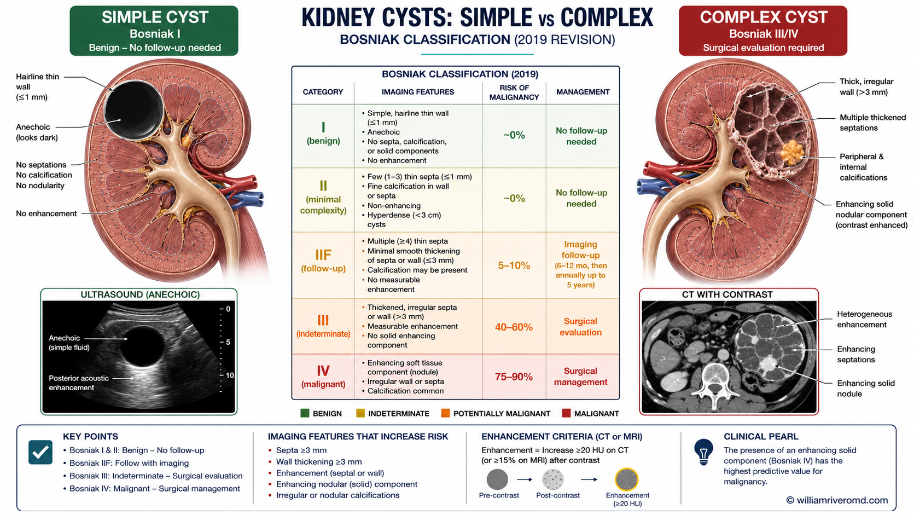
⊕
01Simple vs Complex Kidney Cyst — Bosniak Classification
Dual-panel comparison: simple cyst (Bosniak I — thin wall, anechoic, no septations, benign) vs complex cyst (Bosniak III/IV — thick wall, septations, calcification, enhancing nodule, malignant potential). Central Bosniak classification table I→IV color-coded green to red. Ultrasound and CT insets per type.
Bosniak 2019US CorrelateMalignant Potential
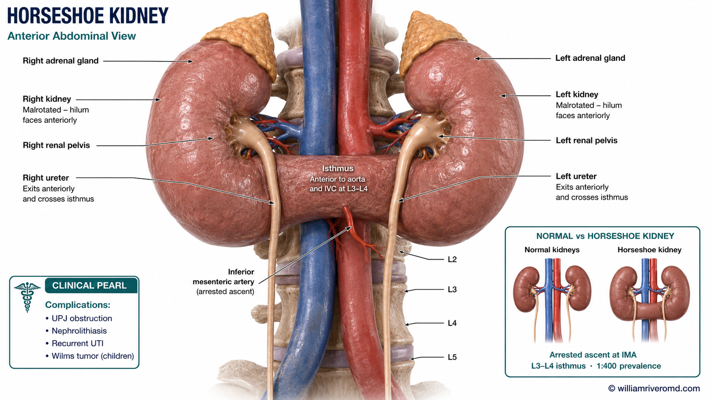
⊕
02Horseshoe Kidney — Fusion Anomaly
Lower pole fusion across midline anterior to aorta and IVC. Isthmus at L3–L4, arrested by inferior mesenteric artery. Medially rotated hila facing anteriorly. Ureters crossing anterior to isthmus. Inset comparison: normal vs horseshoe kidney position. Complications: UPJ obstruction, stones, UTI, Wilms tumor risk.
IMA ArrestUPJ ObstructionWilms Risk
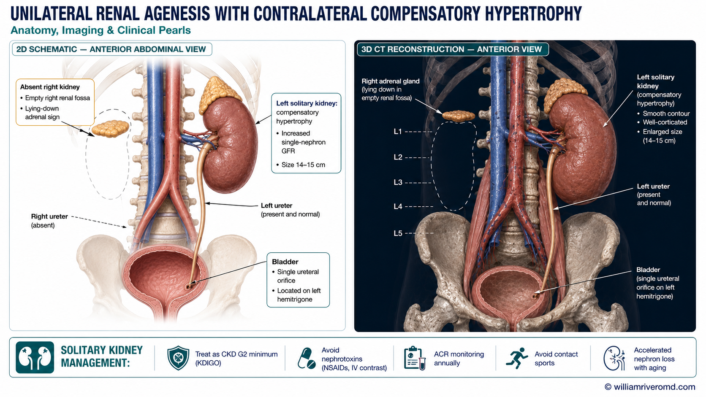
⊕
03Unilateral Renal Agenesis — Solitary Kidney
2D schematic: absent right kidney, lying-down adrenal sign in empty fossa, hemitrigone. 3D render: enlarged solitary left kidney with compensatory hypertrophy. Management strip: KDIGO G2 equivalent, ACR monitoring, nephrotoxin avoidance, contact sport restriction, accelerated aging-related nephron loss.
Three panels: (1) Prone patient clinical scene with small Netter-style kidney inset showing lower pole target. (2) Magnified cross-section: 16G spring-loaded needle through cortex layers, 15–20mm core specimen with labeled glomeruli. (3) Core on ruler, schematic histology (LM/IF/EM jars). Patient must be PRONE. Lower pole targeted — less vascular, away from hilum.
1Patient prone; US identifies lower pole cortex
2Local anesthesia skin → capsule under real-time US
316G spring-loaded needle; patient holds breath
4≥2 cores obtained; target ≥10 glomeruli each
56h bed rest, vital signs, urine color monitoring
Lower Pole TargetProne PositionBleeding Risk
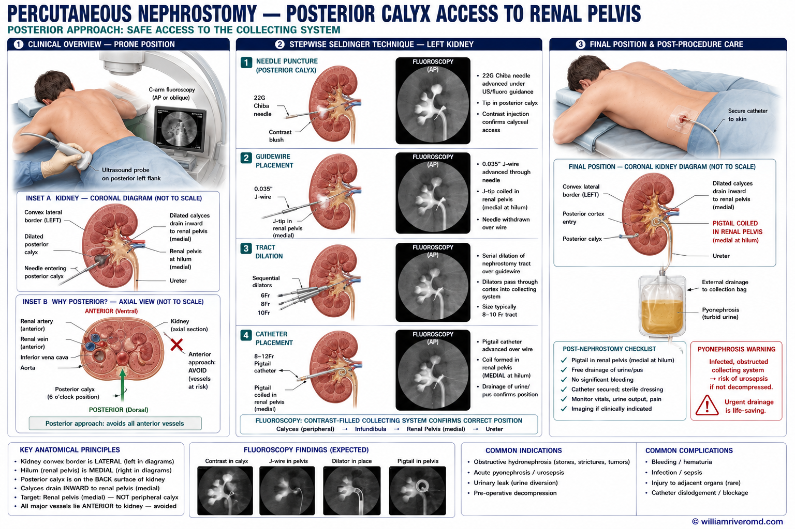
⊕
P2PCN Nephrostomy Tube Insertion — Seldinger
Three panels: (1) Prone patient clinical scene, C-arm + US probe, kidney anatomy only in small correctly-oriented inset box (NOT on skin). (2) 4-step Seldinger sequence — each with kidney diagram (calyces draining inward to medial pelvis) and fluoroscopy inset. (3) Final position: pigtail coiled in renal pelvis (medial hilum), external drainage bag showing turbid pyonephrosic fluid.
Three panels: (1) Transparent anterior abdominal wall: tip in Douglas pouch, deep cuff in preperitoneal space, subcutaneous tunnel, superficial cuff 2cm from exit, exit site pointing downward. (2) Surgical cross-section 4-steps: minilaparotomy → catheter into pelvis → tunnel creation → cuff positioning. (3) Magnified dual-cuff cross-section: all abdominal wall layers, fibrous ingrowth into Dacron shown.
1Exit site: 2cm below umbilicus, left of midline
2Peritoneum entered; catheter tip directed to Douglas pouch
3Deep cuff anchored in preperitoneal space
4Subcutaneous tunnel; superficial cuff 2cm from exit; break-in 2 weeks
Double Dacron CuffDouglas PouchBreak-In 2 Weeks
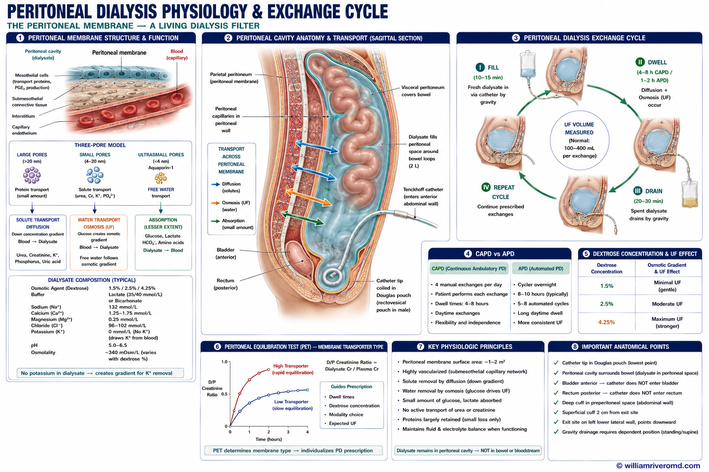
⊕
P7Peritoneal Dialysis — Fluid Exchange Mechanism
Sagittal torso cross-section: peritoneal cavity with 2L dialysate surrounding bowel loops. Peritoneal membrane highlighted. Transport arrows: diffusion (blood→dialysate: urea/Cr/K/PO4), osmosis/UF (water from blood), absorption (glucose/lactate from dialysate). Circular exchange cycle ①Fill②Dwell③Drain. CAPD vs APD comparison. Dextrose concentration vs UF volume table. PET transport type diagram.
1Fill: 2L fresh dialysate instilled (10–15 min)
2Dwell: diffusion + UF across peritoneal membrane
3Drain: spent dialysate by gravity; UF volume measured
Three panels: (1) Right neck anatomy — IJV lateral to carotid (MUST be correct), SCM overlying, US probe, needle at 45° toward nipple. Axial cross-section inset: IJV lateral/compressible, carotid medial/non-compressible. (2) 4-step Seldinger sequence with US + fluoroscopy insets. (3) Final position + CXR: tip at T4–T5, correct vs too-deep vs too-high positions color-coded.
1Patient supine, head turned 30° left; US identifies right IJV lateral to carotid
218G needle at 45°; dark non-pulsatile blood confirms IJV
3J-wire → dilator → 12–13Fr dual-lumen catheter
4CXR confirms tip T4–T5; heparin lock after each HD
Right IJV PreferredUS-GuidedCRBSI RiskSVC-RA Junction
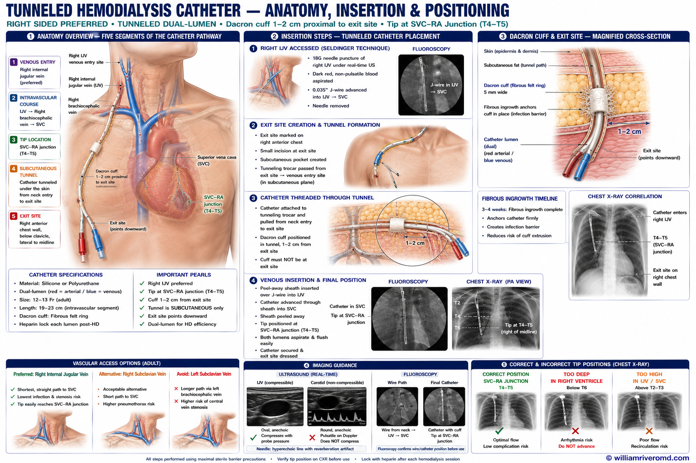
⊕
P9Tunneled Permcath Insertion — Right IJV Approach
Three panels: (1) Transparent anterior chest: venous entry at neck, intravascular course IJV→SVC, subcutaneous tunnel curving to chest exit, Dacron cuff 1–2cm from exit, dual-lumen ports. (2) Tunnel creation 4-step cross-section: IJV access → exit site marking → trocar tunneling → Dacron cuff positioning (NOT at exit — 1–2cm inside). (3) Magnified cuff cross-section with fibrous ingrowth + CXR tip position.
1Right IJV accessed (Seldinger); wire to SVC confirmed
2Exit site on anterior chest wall below clavicle
3Subcutaneous tunnel created from neck to exit site
4Dacron cuff 1–2cm from exit; tip at SVC-RA junction
P17TURBT — Transurethral Resection of Bladder Tumor
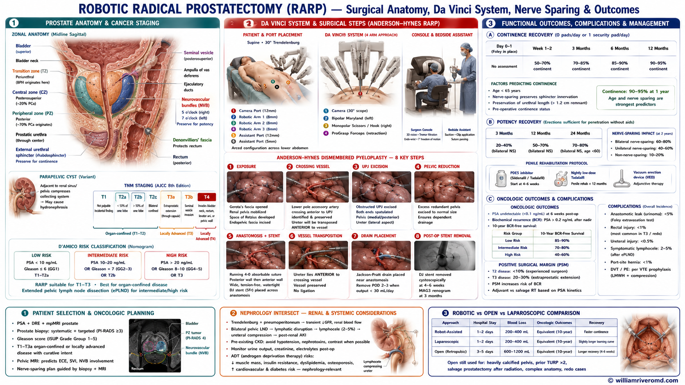
⊕
P18Robotic Radical Prostatectomy (RARP) — Da Vinci Technique
Developmental Sequence — Weeks 3 → 36
Wk 3–4
Pronephros
Wk 4–6
Mesonephros
Wk 5–6
Ureteric Bud
Wk 6–10
Branching
Wk 7–36
Nephrogenesis
Wk 6–9
Ascent
Wk 10+
Fetal Kidney
Reference
Anomaly Map
Three Kidney PrecursorsPronephros · Mesonephros · Metanephros
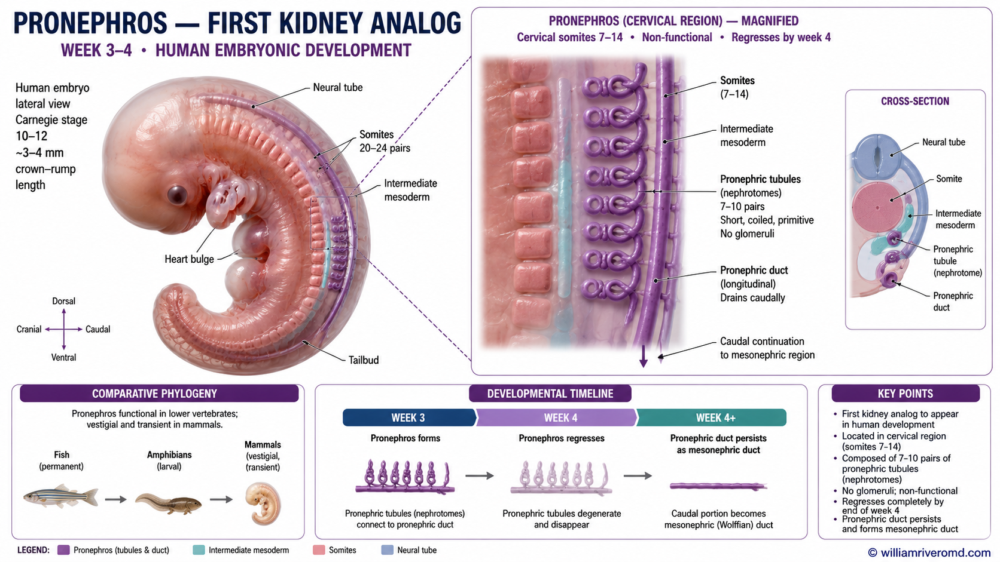
⊕
E1Pronephros — Week 3–4
First kidney analog arising from cervical intermediate mesoderm (somites 7–14). Seven to ten paired non-functional nephrotomes. Pronephric duct extends caudally — this persists as the mesonephric (Wolffian) duct. Completely regresses by week 4. Functional in fish; vestigial in mammals. Phylogenetic comparison panel.
E3Ureteric Bud Emergence & MM Induction — Week 5–6
Ureteric bud (UB) sprouts from caudal Wolffian duct at week 5. GDNF from metanephric mesenchyme (MM) activates RET receptor on UB tip → induces invasion. Reciprocal induction begins. Key signals: GDNF→RET (primary), Wnt11 (UB maintains GDNF), PAX2/PAX8/WT1 (MM competence). GDNF/RET failure → renal agenesis. Single vs dual UB → normal vs duplex collecting system.
GDNF / RETAgenesis if FailedDual UB → Duplex
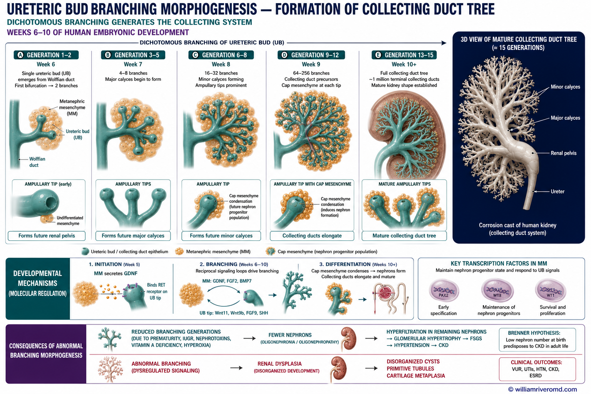
⊕
E4Branching Morphogenesis — Week 6–10
~15 rounds of dichotomous UB branching: generations 1–5 (renal pelvis + major calyces), 6–11 (minor calyces), 12–15 (collecting ducts). Each ampulla tip induces cap mesenchyme condensation — future nephron progenitor population. ~1 million terminal collecting ducts generated, each inducing one nephron. 3D collecting duct tree inset. Reduced branching → oligonephropathy.